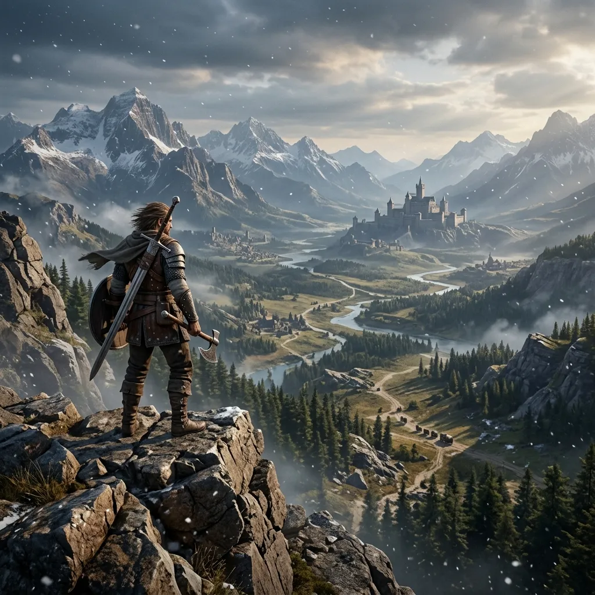

Crimson Desert Global Launch: Real-Time Monitoring in YoutubeMulti.online of the Open-World RPG

It’s finally here. Crimson Desert launched across the globe on March 19, 2026. If you’re reading this, you’ve already mastered and accepted your fate as someone who loves big open-world RPGs.
Crimson Desert has had players buzzing since it was first announced. What was once going to be a prequel to the world-renowned MMORPG Black Desert Online has now blossomed into its own single-player juggernaut. On launch day, players are finding that the game is absolutely gigantic. If you’re anything like us die-hard gamers, your only means of consuming and watching every second of a day-one game is through operating a legion of streams via YoutubeMulti. Welcome to our Launch Command Center.
The Land Beyond: An EXPANSIVE OPEN World Experience
Macduff and his team of mercenaries traverse the continent of Pywel. This vast world is filled with immense contrasts. From snowy mountains in the North to hot grasslands in the South. Everything you will explore is coated with astonishing detail. Pearl Abyss have managed to fit so much into each inch of the map. You travel through multiple regions and experience changing weather, natural ecosystems, and ancient history. Untold stories hidden within the depths of both environmental clues and lore quests.
Ditching the MMO-lite style of the prequel in favor of a single-player focused title was risky, but it really allowed for cinematic animations, nuanced AI, and a dynamic world that genuinely responds to your actions. From shuffling through an abandoned ruin to persuading a warlord to back down, it really feels like you're there. As you'll want to reference a wiki or two to truly experience all this open-world has to offer, many are taking advantage of YoutubeMulti to keep multiple wiki guides and interactive maps open at once. You'll never overlook a secret tasty or time-based side mission this way.
Crimson Desert Performance on PC PS5 Xbox Series X
What makes Crimson Desert different? It runs on Pearl Abyss's own technology, built to push today’s systems hard. Picture lighting that behaves like real life, shapes moving with weight and resistance - each scene shaped with care. The visuals do not just impress; they respond, shift, breathe. What stands out first? How naturally the inside blends with the outside, pulling you deeper into the experience while giving scenes a film-like rhythm. Still, getting visuals this sharp comes with hurdles. High-end graphics like these need precise tuning so they run steadily whether on PC, PS5, or Xbox Series X.
For computers, plenty of options show up right away. Some match new methods that sharpen blurry visuals. Each choice fits different needs without extra steps Some newer tools work much like DLSS 4 along with FSR 4. Console users get separate options called "Performance" or "Resolution" settings instead For better results on their gear, plenty of players now piece together dashboards with multiple views Those head-to-head tests by Digital Foundry, mixed with real-time clips from high-end systems Watching streamers play helps compare performance live. See precisely how the game runs during intense moments through their screens Before touching your game controls, experience fights on various systems. Every PC handles these moments differently. For anyone who loves details, spotting things by eye kicks off the first-day routine.
Combat and exploration in game mechanics
What stands out in Crimson Desert is how the fighting feels - smooth, intense, leaving you satisfied after every clash because movement flows without stiffness while hits carry weight unlike many others where impact seems fake or light At its core, it pulls together pieces from classic action RPGs while borrowing intricate mechanics found in games such as One game has you slashing with blades, another lets arrows fly through air. Shields appear in both, ready for blocking strikes. Choose your tool - each handles differently when fighting begins Yet still using magic powers that mix together to create strong outcomes. The "mercenary What stands out is how the system lets you bring in various companions. Each one fights differently. Picking them changes how you play. Their skills mix in unexpected ways. Team choices shape every encounter. Following your lead, they adapt on the fly Each has distinct skills along with different ways of fighting
Just around the corner, something worth finding waits. Inside Pywel, quiet details hide - seen only when looked at closely, Figuring things out in new ways is part of what makes it click. Interaction shapes progress when the world responds differently each time Scaling steep rock faces, people move fast - sometimes gliding across wide spaces with fabric wings floating above them. Staying sharp means moving smarter than before When tackling tough parts of the game like hidden challenges or boss fights, using several streams at once really helps. Set one screen just for that Start off with a tile showing real-time gameplay without any talking, shift next to a separate stream focused only on boss strategies, finish up with yet another option laid out nearby Check out a live forum or social media stream to spot what people are finding right now. That When people share what they learn, hidden tips surface more easily. One discovery leads to another, quietly building better results over time.
Real Time Monitoring Using YoutubeMulti For Immediate Operations Setup
Worldwide release on this scale means lots of details floating around. With the main previews out, the With community-run wikis feeding real-time edits, patch notes arriving mid-game without restarts, plus endless streams diving into hidden corners of the map, something sticks around Screen packed full of videos. With YoutubeMulti, arranging them becomes possible A high-end setup called the "Gaming Dashboard" tracks every part of the launch environment
The Future of Crimson Desert What Comes Next in Story Worlds and Player Discoveries
Starting with Crimson Desert isn’t where it ends. Hints from Pearl Abyss point to something larger taking shape behind the scenes After launch, more areas will open up - each bringing fresh faces to play as, while updates roll out steadily across the roadmap A tale unfolds through the "Legendary Quest" setup, deepening Pywel's story bit by bit. Folks online begin diving in before it even hits full stride Putting together the big puzzles about life keeps expanding, while people keep talking more about it As time passes, a growing number finish the late stages
Staying inside this shifting story means finding ways to keep up with what gamers everywhere are doing Unearths hidden layers within the gameplay. Sometimes chasing a fabled blade, sometimes cracking coded messages left behind Hidden temple walls hold old carvings while cameras watch every angle without pause Now unfolding step by step. A shift is happening - games shaped by players, not just built for them. This one, Crimson Desert, sits right at the front Just right spot for trying out how games feel now.
Conclusion: The New Benchmark for Open World RPGs
A vast landscape unfolds in Crimson Desert, where every detail feels intentional. Not merely entertainment, but a testament to craftsmanship in virtual creation Achieves what few games manage - intense combat woven tightly with thoughtful choices. Fast moments connect seamlessly into slower ones, building tension naturally. Every encounter feels shaped by decisions that matter. The rhythm never drags, yet allows space to breathe. Systems support play instead of guiding it. Complexity hides beneath clean surfaces Stories come alive when done right. Using something such as YoutubeMulti helps shape how you engage. with what unfolds on screen each part of this huge rollout handled smoothly, kept lively without extra steps. Skip merely joining the Master the game. Study how it works. Be part of players worldwide uncovering all parts of Pywel. This is the name A fresh legend arrives - this one stuns